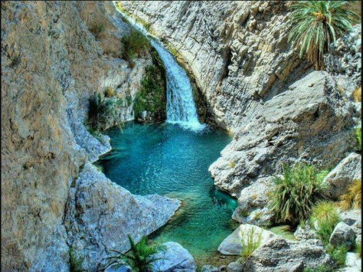

Admin
January 14, 2019
2 Commets
Pir Ghayb (The Invisible Saint) Waterfalls – Bolan, Balochistan
Pir Ghaib Falls, Bolan – This is an awe-inspiring view of Pir Ghaib, Balochistan. Locals here believe in the myth of the Invisible Saint (Pir Ghaib), who was saved by the Almighty, after a wicked King’s men attacked him. The Saint struck a stick in the mountain from which the water still pours out till date, believe it or not.